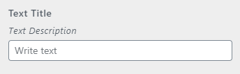

Meet The Easiet WordPress Customizer Framework.
Yano is an open-source WordPress toolkit build for Software Engineers to develop theme using WordPress Customizer API while writing clean and minimal code only.
Total Downloads: 11K
WordPress Customizer API can be headache and confusing. So Yano manage to simplified the process of adding controls to Customizer.
Yano will allow you to organize your code. Instead of calling three methods in order to add controls, Yano simplified it by just calling one method.
Yano provide also a useful API for utilities, This will provide a useful methods where you can use in adding controls and providing data.
Because Yano simplified WordPress Customizer API, it will help you to work fast, minimal and save a lot of time coding complicated control.
The first step is to add a Panel for more information about panel please read in here.
Second step is to add Section inside a Panel. You need to copy the id of Panel and copy in section argument panel. For more information about section arguments please read in here.
And the last is to add a Field, we just need to copy the id of the section and paste in field section argument. In this example we will going to add a text field.
Panel are containers for section, they allow you to group multiple sections. You can add panel using Yano::panel() method.
Yano::panel( 'panel_id', [
'title' => 'Panel title',
'description' => 'Panel description',
'priority' => 1
] );
* This is just a basic demonstration of Customizer Panel. For more features please checkout the panel documentation.
Sections are where the Fields reside, you can have multiple Field in each Section. Also Section can be added in panel. You can add section using Yano::section() method.
Yano::section( 'section_id', [
'title' => 'Section title',
'description' => 'Section description',
'priority' => 1,
] );
Adding section inside a panel, you just need to add panel in section and copy the panel id.
Yano::section( 'section_id', [
'title' => 'Section title',
'description' => 'Section description',
'priority' => 1,
'panel' => 'panel_id' // you just need to add panel and copy panel id
] );
* This is just a basic demonstration of Customizer Section. For more features please checkout the section documentation.
Fields are the actual UI Elements that you use to modify your theme settings. You can add field using Yano::field() method.
// Example of adding text field
Yano::field( 'text', [
'id' => 'textdb1',
'label' => 'Text Title',
'description' => 'Test Description',
'section' => 'section_id',
'priority' => 1,
'placeholder' => 'Write text'
] );
Output of the code above.
* This is just a basic demonstration of Customizer Field.